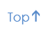

SignlinkCMS est un système de gestion de contenu en ligne développé spécialement pour les utilisateurs de langues des signes (p. ex., American Sign Language – ASL, Langue des signes québécoise – LSQ, British Sign Language – BSL).
SignlinkCMS est compatible avec les pages Web signées produites par Signlink Studio v2.0 (un outil d’auteur gratuit que vous pouvez télécharger depuis www.signlinkstudio.com), avec des vidéoclips, des images et du texte.
Dans SignlinkCMS, des icônes et d’autres indices visuels, plutôt que du texte, servent à transmettre l’information aux membres du site Web. Cela crée une expérience immersive fondée sur la langue des signes pour les membres du site Web.
SignlinkCMS offre la fonctionnalité de créer et de gérer des pages, des groupes de discussion et des vidéoblogues.



Le nom d’utilisateur et le mot de passe pour la zone d’administration sont réglés durant l’installation. Une fois que vous entrez en ligne un menu s’affiche, tel que l’indique la Figure 1. Vous pouvez fermer la session en cliquant sur l’icône de fermeture de session située complètement à droite.

Vous pouvez également supprimer des membres. Prenez note que la suppression d’un membre n’empêche pas ce membre de s’inscrire à l’aide d’un autre nom d’utilisateur et ne supprime pas les messages existants du membre.
Cliquez sur « Nouvelle page » pour créer une nouvelle page. La création d’une nouvelle page ressemble beaucoup à la création d’un sujet de discussion ou à la réponse à un message, tel que le décrit la documentation de l’utilisateur (reportez-vous à 4.5.2). Premièrement, déterminez si votre page doit être une page racine (parent) ou une page fille (choisissez la page parent). Ensuite, choisissez le format du titre (image, vidéoclip ou texte) et le format du contenu (objet de lien vidéo signé, vidéoclip ou texte) pour soumettre. Cliquez sur « Soumettre » lorsque vous avez terminé.
Sous « Nouvelle page », une liste des pages dans votre site s’affiche. La liste de chaque page montre l’identification de la page, le titre, l’identification de sa page parent (un parent 0 indique une page racine), la date et l’heure où la page a été créée, ainsi que les liens pour « Visualiser », « Éditer » et « Supprimer » la page.

Pour créer un groupe de discussion, cliquez sur « Nouveau groupe de discussion. Spécifiez un titre de groupe de discussion (image, vidéoclip ou texte) et cliquez sur Soumettre pour créer le groupe de discussion.
Sous le lien « Nouveau groupe de discussion », se trouve une liste des groupes de discussion dans votre site. Chaque liste de groupes de discussion indique le titre du groupe de discussion, le nombre de sujets dans le groupe de discussion, le nombre d’articles dans le groupe de discussion, la date et l’heure du dernier article et les liens vers « Articles », « Éditer » et « supprimer ».
« Articles » vous permet de trouver et de supprimer des articles. Prenez note que vous devez supprimer toutes les réponses à un article avant de pouvoir supprimer l’article d’origine.


Adresse de courriel: Vous devez soumettre une adresse de courriel valide sous le format « adressedecourriel@endroit.com » ("emailaddress@place.com") pour que ce changement soit accepté.
Mot de passe de l’administrateur : Pour être valides, les mots de passe doivent comporter plus de huit caractères alphanumériques.
Nom du site : Un nom de texte pour le site. Celui-ci s’affiche dans la barre de titre du navigateur.
Taille maximum des fichiers pour le téléchargement: Il est important pour vous ou pour l’administrateur de votre système de déterminer la limite à imposer sur la taille des fichiers pour le téléchargement. Les vidéoclips et pages Web signées ont souvent des exigences d’espace importantes. Si vous imposez une limite trop faible, vos membres ne pourront pas créer de messages fidèles et significatifs. Cependant, sans limites, vos membres ne seront pas incités à comprimer leurs vidéoclips de manière appropriée et le serveur pourrait rapidement devenir surchargé. Également, il faudra beaucoup de temps aux membres de votre site pour télécharger de très gros fichiers, ce qui compromettra l’utilisabilité de votre site. La taille de fichier maximum recommandée pour SignlinkCMS est de 5 Mo, ce qui prévoit une page Web signée comportant un vidéoclip d’environ une minute aux taux de compression typiques.


Vous pouvez utiliser SignlinkCMS en saisissant une adresse Web (p. ex. http://www.signlinkstudio.com/Canadian_Deaf_Academics_SignlinkCMS/) dans votre navigateur. Si vous n’êtes pas certain de l’adresse Web, veuillez communiquer avec votre administrateur de SignlinkCMS.
Lorsque vous allez à la page d’accueil SignlinkCMS, un écran probablement semblable à la page Web illustrée à la Figure 6 s’affiche. La page d’accueil comporte plusieurs parties : une barre de navigation, une zone d’ouverture de session et une zone de contenu. La zone de contenu comprend normalement trois sections : des pages, des groupes de discussion et des vidéoblogues.

Lorsque vous cliquez sur la barre bleue, vous êtes amené à une autre page Web où vous pouvez visualiser plus de pages en cliquant sur d’autres barres bleues. Certaines pages contiennent seulement des images et du texte, mais beaucoup contiennent des vidéoclips ou des pages Web signées. Prenez le temps de vous familiariser avec SignlinkCMS en cliquant sur certaines barres bleues et en visualisant certaines pages Web. Vous pouvez revenir à la page d’accueil en cliquant sur l’icône de la page d’accueil (reportez-vous à 4.3.1).

Tel que susmentionné, SignlinkCMS vous permet de visualiser des pages Web signées. Ces pages Web sont créées à l’aide d’un éditeur de pages Web du nom de Signlink Studio (available at www.signlinkstudio.com/). Vous pouvez en apprendre davantage sur la visualisation des pages Web signées à la section 5 de ce guide.


Voici la première page qui s’affiche lorsque vous arrivez dans un site de SignlinkCMS (reportez-vous à Figure 6). La page d’accueil comporte des liens à des pages, à des groupes de discussion et à des vidéoblogues, ainsi qu’à une zone d’entrée en session. La page d’accueil inclut également un volet de contenu qui offre un choix de pages, de groupes de discussion et de vidéoblogues pour indiquer ce qui est accessible dans le site.

Le volet des « pages » du site Web contient des pages Web qui ont été ajoutées par l’administrateur du site Web. Ces pages peuvent renfermer des renseignements comme une page d’accueil, des directives à l’intention des nouveaux membres, etc. Pour plus d’information, reportez-vous à la section 4.5.1.

Le volet des groupes de discussion du site Web vous permet de visiter les divers groupes de discussion dans le système et d’y participer. Pour plus d’information, reportez-vous à la section 4.5.2.

Le volet des vidéoblogues vous permet de visiter les divers vidéoblogues dans le site Web. Pour plus d’information, reportez-vous à la section 4.5.3..

Cliquez sur l’aide pour que s’affiche ce guide virtuel (offert dans la langue des signes et en texte).
La Figure 9 illustre la zone d’ouverture de session. Il n’est pas nécessaire d’entrer en session pour visualiser le site Web, mais vous devez entrer en session si vous voulez afficher des articles dans les groupes de discussion, répondre aux messages ou passer des commentaires et lancer votre propre vidéoblogue.
Vous devez vous inscrire auprès du site pour entrer en session. Pour vous inscrire, sélectionnez « Inscription » dans la zone d’ouverture de session (Figure 9).

La page d’inscription (Figure 10) vous demande votre nom et votre adresse de courriel (ce qui est nécessaire dans l’éventualité où vous oublieriez votre mot de passe) et vous permet de créer votre nom d’utilisateur et votre mot de passe. Le mot de passe que vous choisissez doit comporter plus de huit caractères alphanumériques. Vous devez également choisir un nom d’utilisateur unique et une adresse de courriel.

Créez un nouveau compte
Nom :
Courriel :
Nom d’utilisateur :
Mot de passe :
Répétez le mot de passe :
Une fois que vous vous êtes inscrit et que vous entrez en session, la zone d’ouverture de session change pour montrer votre nom d’utilisateur et l’image d’un avatar en blanc (Figure 11). Deux icônes s’affichent aussi : une icône des « Préférences » et une icône de « Fermeture de session ».


Pour éditer votre compte, sélectionnez l’icône des « Préférences » dans la zone d’ouverture de session.
Cette sélection affiche un écran qui vous permet de changer votre nom, votre courriel et l’image de votre avatar (Figure 12). Cliquez sur « Soumettre » pour enregistrer vos changements.

Une fois que vous avez créé votre image d’avatar, la zone d’ouverture de session inclut cette image (Figure 13).


Cliquez sur l’icône de fermeture de session pour sortir du site Web.
Entrez votre adresse de courriel et les détails pour votre entrée en session vous seront acheminés par courriel.
L’administrateur du site Web crée des pages à l’intention des membres. Par exemple, l’administrateur peut utiliser une page pour souhaiter la bienvenue aux gens dans SignlinkCMS ou pour expliquer les modalités de demande d’un compte de vidéoblogues.
Un groupe de discussion est une discussion en ligne. L’administrateur du site Web de SignlinkCMS est le seul qui peut créer des groupes de discussion, mais n’importe qui peut visualiser un groupe de discussion. Si vous entrez en session, vous pouvez également créer de nouveaux sujets de discussion et soumettre de nouveaux articles.
Lorsque vous cliquez sur l’icône du groupe de discussion dans la barre de navigation, une ou plusieurs boîtes de discussion s’affichent. Chaque boîte de discussion (Figure 14) indique un titre (c.-à-d., vidéoclip, image ou texte). Au bas à gauche de la boîte de discussion, une icône d’enveloppe indique les nouveaux messages ( icône rouge) et les messages déjà lus (
icône rouge) et les messages déjà lus ( icône bleue). En outre, vous pouvez voir combien d’articles et de sujets figurent dans le groupe de discussion.
icône bleue). En outre, vous pouvez voir combien d’articles et de sujets figurent dans le groupe de discussion.

Entrée dans un groupe de discussion
Pour entrer dans un groupe de discussion, cliquez sur la barre bleue qui s’affiche sous le titre du groupe de discussion (c.-à-d., vidéoclip, image ou texte). Lorsque vous entrez dans le groupe de discussion, vous voyez le titre du groupe de discussion dans le haut, et, sous celui-sous, une série de boîtes de sujets, indiquant les sujets dans le groupe de discussion (Figure 15).

Visualisation d’un sujet et d’un message
Chaque boîte de sujets (Figure 16) indique le titre du sujet. Sous la barre bleue, plusieurs autres informations s’affichent:


Pour visualiser un sujet, cliquez sur la barre bleue. La page Web pour le sujet (Figure 17) indique le titre du groupe de discussion. Complètement à droite du titre du groupe de discussion une icône de flèche vous permet de retourner à la page du groupe de discussion 
Sous le titre du groupe de discussion se trouvent le titre du sujet et l’article. Prenez note que tout comme les titres, un article de discussion peut être une page Web signée, un message vidéo ou un message texte. Sous l’article du sujet se trouve une liste des réponses à l’article.

Visualisation d’une réponse
Chaque réponse comporte quatre éléments:
 , un vidéoclip
, un vidéoclip  , ou du texte ordinaire.
, ou du texte ordinaire.
Lancement d’un nouveau sujet
Pour lancer un nouveau sujet, sélectionnez le bouton « nouveau sujet »  situé complètement à droite de la page du groupe de discussion principal (Figure 18).
situé complètement à droite de la page du groupe de discussion principal (Figure 18).

Cette sélection vous amène à une nouvelle page où vous pouvez spécifier un sujet et un message pour lancer un nouveau sujet (Figure 18).

Pour le sujet, choisissez une image, un vidéoclip ou du texte. Pour le message, choisissez entre une page Web signée (requiert un fichier swf et un fichier mp4), un vidéoclip ou du texte. Une fois que vous avez choisi quel type de contenu vous voulez utiliser, vous devez en indiquer l’emplacement dans votre ordinateur. Saisissez « alt text » pour que le texte s’affiche lorsque les membres promènent leur souris sur votre image ou vidéoclip. Cliquez sur Soumettre pour finir la création de la page de sujet (Figure 20).

Pour plus de renseignements sur la création de pages Web signées, reportez-vous à www.signlinkstudio.com.
Réponse à un article
Répondre à un article ressemble beaucoup à la création d’un nouveau sujet, sauf qu’un sujet n’est pas requis. Il vous suffit de sélectionner le bouton de réponse  , ainsi que le type de contenu de la réponse, tel qu’indiqué plus haut (Figure 21). Une fois que vous avez spécifié votre réponse, cliquez sur « Soumettre ».
, ainsi que le type de contenu de la réponse, tel qu’indiqué plus haut (Figure 21). Une fois que vous avez spécifié votre réponse, cliquez sur « Soumettre ».


Édition d’un article
L’édition d’un article ressemble à la création d’un article et à la réponse à un article. Lorsque vous êtes entré en session et que vous visualisez un article que vous avez soumis, vous pouvez voir un bouton d’édition  situé complètement à droite. En cliquant sur ce bouton, vous pouvez changer votre article.
situé complètement à droite. En cliquant sur ce bouton, vous pouvez changer votre article.

Les vidéoblogues sont une zone dans laquelle seuls les membres auxquels l’administrateur a spécifiquement fourni un vidéoblogue peuvent afficher des entrées. Les autres membres peuvent passer des commentaires sur ces entrées.
À tous les autres aspects, les vidéoblogues fonctionnent de la même façon que les groupes de discussion.

Les pages Web signées sont des pages Web spécialement conçues pour les utilisateurs de la langue des signes. Elles vous permettent d’afficher et de visualiser du matériel dans l’Internet entièrement en langue des signes ou en langue des signes avec sous-titres ou texte. Pour créer une page Web signée, vous devez utiliser Signlink Studio, un éditeur de pages Web que vous pouvez télécharger à www.signlinkstudio.com.
À l’aide de la technique Signlink, des vidéoclips de signeurs peuvent être liés à toute autre information dans le web. Vous pouvez voir un exemple à la Figure 24.

Une page Web signée est construite autour d’un vidéoclip d’un signeur. Lorsque le signeur identifie un concept que l’auteur de la page Web a lié à une autre page Web, un lien vidé signé s’affiche. Les liens vidéo signés ressemblent à des hyperliens de texte sur une page Web de texte – vous pouvez cliquer sur un lien pour aller ailleurs dans le Web. Un lien vidéo signé est identifié par un contour rouge autour du vidéoclip. Sur une page Web signée, plusieurs fonctionnalités complètent le vidéoclip :

La ligne de temps du lien vous permet de voir le nombre et l’emplacement des liens signés dans le vidéoclip. Un lien est surligné lorsque son lien vidéo signé joue dans le vidéoclip. Un clic sur l’un des liens bleus fait jouer le vidéoclip du début de ce lien vidéo signé.

Chaque vignette est une image saisie d’un lien vidéo signé différent. Une vignette est surlignée lorsque son lien vidéo signé joue dans le vidéoclip. Un clic sur la vignette fait jouer le vidéoclip du début du lien vidéo signé. Lorsque vous voulez suivre un lien vidéo signé, sélectionnez la barre bleue sur laquelle figure l’icône de la main sous la vignette.

Ces buttons font passer au lien suivant ou précédent dans un vidéoclip.

Ce bouton fait basculer au mode de ralenti. Ce bouton peut s’avérer très utile lorsqu’un signeur épelle rapidement avec les doigts.
Après avoir utilisé Signlink Studio en vue de créer une page Web signée pour son utilisation dans SignlinkCMS, vous devez « exporter » votre page Web. Cela crée un répertoire d’exportation renfermant les deux fichiers de pages Web signées, un fichier vidéo (mp4) et un fichier Flash (swf) que vous pouvez télécharger vers SignlinkCMS.